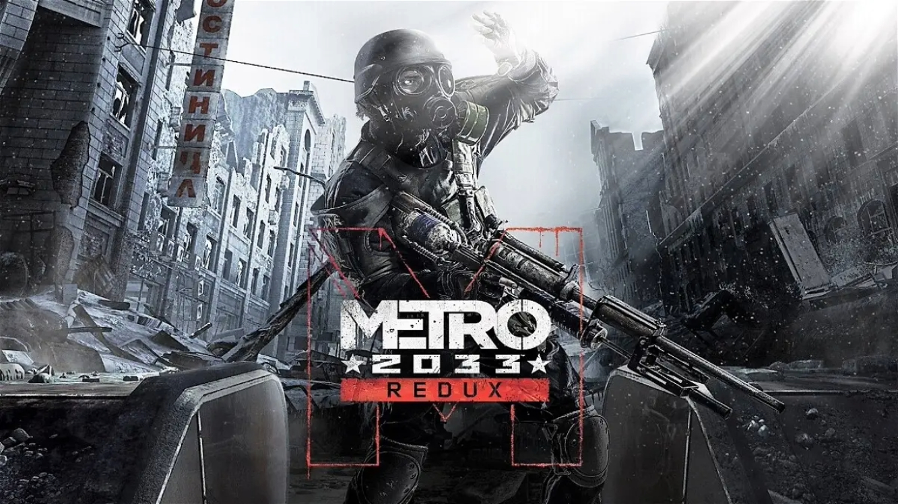

Metro 2033 es un videojuego de disparos en primera persona desarrollado por 4A Games y lanzado en 2010. Está basado en la novela del mismo nombre escrita por Dmitry Glukhovsky. El juego se desarrolla en un mundo postapocalíptico en el año 2033, después de un evento catastrófico que dejó la Tierra devastada y obligó a los sobrevivientes a refugiarse en el sistema de metro de Moscú para escapar de las criaturas mutantes y las condiciones ambientales peligrosas.
Mecánicas y Jugabilidad:
Combate: Los jugadores enfrentan tanto a enemigos humanos como a criaturas mutantes. El combate es tenso y requiere tácticas, ya que los recursos son escasos y las armas pueden deteriorarse con el tiempo.
Sigilo: Se fomenta el sigilo para evitar enfrentamientos innecesarios. El jugador puede optar por evitar enemigos o utilizar tácticas furtivas para eliminarlos silenciosamente.
Exploración: El sistema de metro es un entorno claustrofóbico y oscuro que ofrece áreas para explorar y descubrir secretos. La linterna y el medidor de filtración de máscara de gas son esenciales para la supervivencia.
Personalización de armas: Los jugadores pueden personalizar y mejorar sus armas utilizando recursos encontrados en el mundo del juego.
Historia:
Artyom, el protagonista, es enviado en una misión para advertir a otras estaciones sobre una nueva amenaza mutante. La historia se centra en los conflictos entre diferentes facciones humanas y las tensiones políticas en el metro. A medida que Artyom avanza, descubre más sobre la misteriosa amenaza que enfrenta la humanidad y su propio papel en la lucha por la supervivencia.
El juego explora temas como la supervivencia, la desesperación, la moralidad y las consecuencias de las acciones en un mundo postapocalíptico. La narrativa se desarrolla a través de eventos lineales y encuentros con personajes que ofrecen perspectivas únicas sobre la situación.
En resumen, Metro 2033 es un juego que combina acción intensa, elementos de sigilo, exploración y una narrativa envolvente ambientada en un mundo postapocalíptico único.